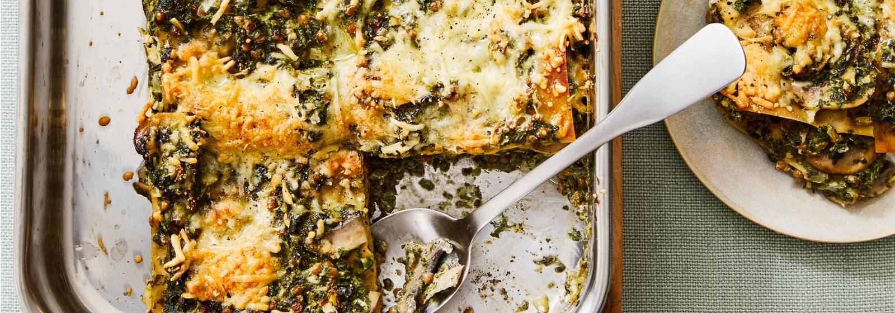
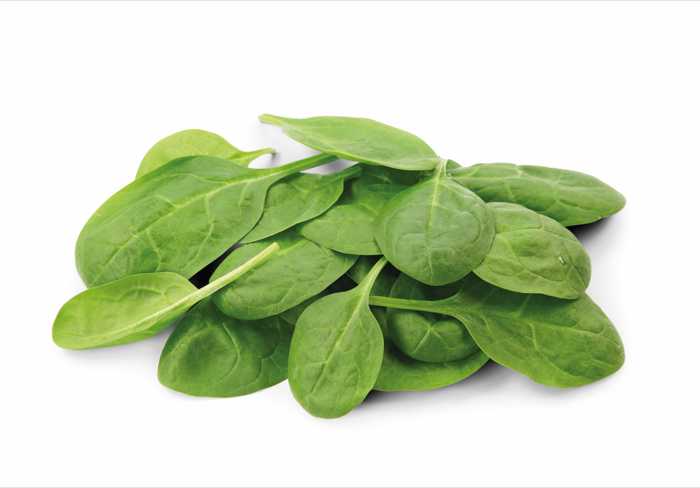
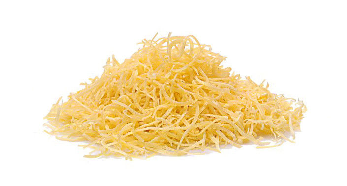

Volkorenlasagne met spinazie en linzen
Met makkelijke aanpassingen zet je zo een gezonde lasagne op tafel
Ingredienten
- 1 middelgrote ui
- 2 tenen knoflook
- 400 g champignons
- 2 el milde olijfolie
- 750 g diepvries fijngesneden spinazie
- 2 el gedroogde Italiaanse kruiden
- 200 g zuivelspread light
- 400 g linzen in blik
- 12 volkoren lasagne bladen
- 150 g geraspte 30+ kaas
Uitgelichte ingredienten
Spinazie is erg gezond
Kaas is vooral erg lekker
Klik hier voor de voedingswaarde
Bereiden
- Verwarm de oven voor op 180 °C.
-
Snijd de volgende ingredienten:
- Snipper de ui.
- Snijd de knoflook fijn.
- Snijd de champignons in plakjes.
- Verhit de olie in een hapjespan en bak de ui en champignons 3 min. op hoog vuur. Voeg de knoflook, spinazie en Italiaanse kruiden toe en verwarm 7 min. op middelhoog vuur mee. Roer regelmatig.
- Voeg de zuivelspread toe en verwarm 1 min. mee. Breng de groentesaus op smaak met peper en eventueel zout. Doe ondertussen de linzen in een vergiet en spoel af onder koud stromend water. Laat uitlekken en voeg toe aan de groentesaus.
- Schep 2 lepels groentesaus op de bodem van de ovenschaal. Bedek achtereenvolgens met ⅓ van de lasagnebladen, ⅓ van de rest van de groentesaus en de kaas. Herhaal dit nog 2 keer en eindig met de rest van de kaas. Breng op smaak met peper.
- Bak de lasagne in het midden van de oven in ca. 40 min. gaar. Dek af met aluminiumfolie als de lasagne te donker wordt.
Bereidingstip: Je kunt de lasagne 1 dag van tevoren maken tot en met het afbakken in de oven. Bewaar afgedekt in de koelkast en laat tijdens het voorverwarmen van de oven op kamertemperatuur komen.